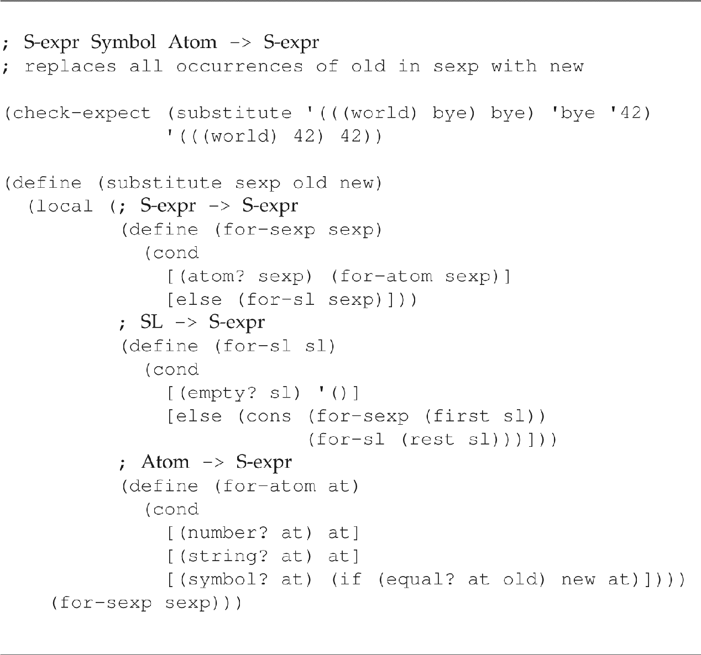
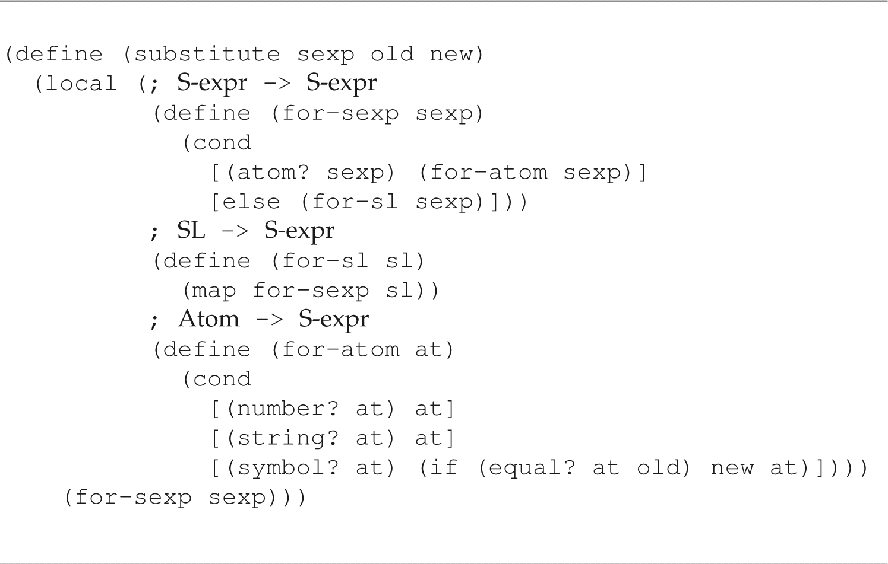
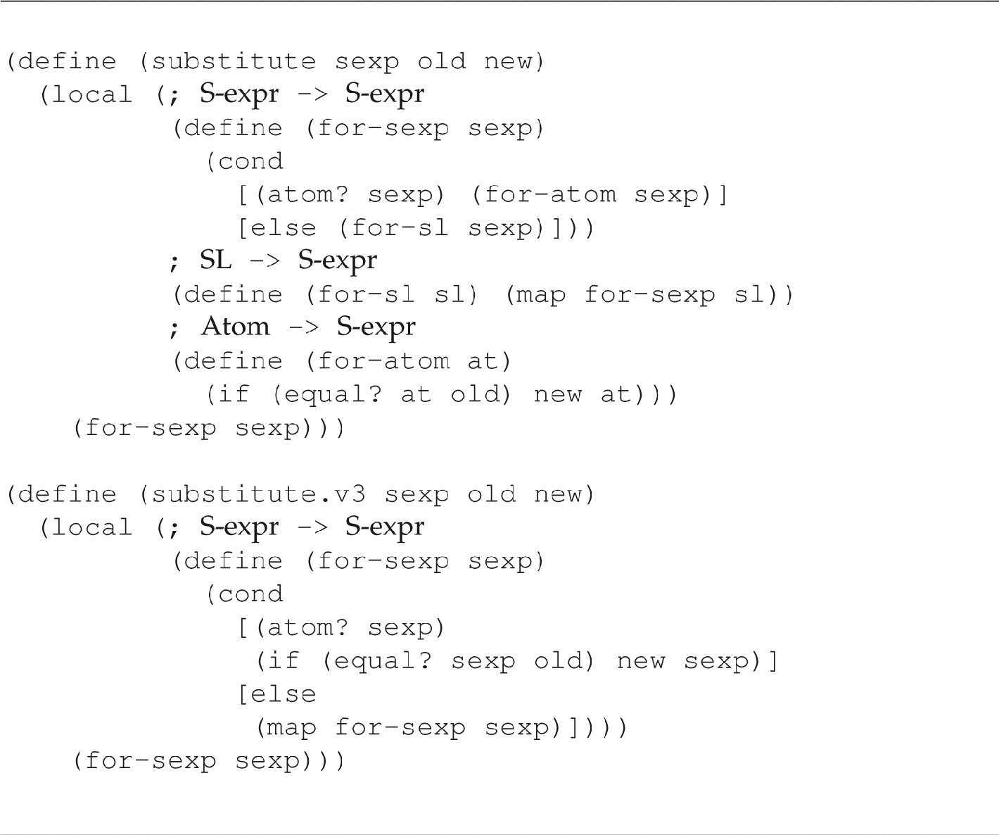
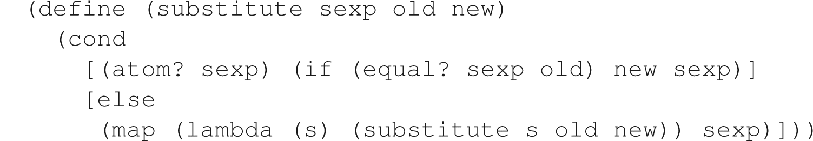

19.6 Simplifying Functions
Exercise 317 shows how to use local to organize a function that deals with an intertwined form of data. This organization also helps simplify functions once we know that the data definition is final. To demonstrate this point, we explain how to simplify the solution of exercise 319.
Figure 120 displays a complete definition of the substitute function. The definition uses local and three auxiliary functions as suggested by the data definition. The figure includes a test case so that you can retest the function after each edit suggested below. Stop! Develop additional test cases; one is almost never enough.

Figure 120: A program to be simplified
Exercise 328. Copy and paste figure 120 into DrRacket; include your test suite. Validate the test suite. As you read along the remainder of this section, perform the edits and rerun the test suites to confirm the validity of our arguments. 
Since we know that SL describes lists of S-expr, we can use map to simplify for-sl. See figure 121 for the result. While the original program says that for-sexp is applied to every item on sl, its revised definition expresses the same idea more succinctly with map.

Figure 121: Program simplification, step 1
For the second simplification step, we need to remind you that equal? compares two arbitrary values. With this in mind, the third local function becomes a one-liner. Figure 122 displays this second simplification.

Figure 122: Program simplification, steps 2 and 3
At this point the last two local definitions consist of a single line. Furthermore, neither definition is recursive. Hence we can in-line the functions in for-sexp. In-lining means replacing (for-atom sexp) with (if (equal? sexp old) new sexp), that is, we replace the parameter at with the actual argument sexp. Similarly, for (for-sl sexp) we put in (map for-sexp sexp); see the bottom half of figure 121. All we are left with now is a function whose definition introduces one local function, which is called on the same major argument. If we systematically supplied the other two arguments, we would immediately see that the locally defined function can be used in lieu of the outer one.
While sexp is also a parameter, this substitution is really acceptable because it, too, stands in for an actual value.
Here is the result of translating this last thought into code:

Stop! Explain why we had to use lambda for this last simplification.